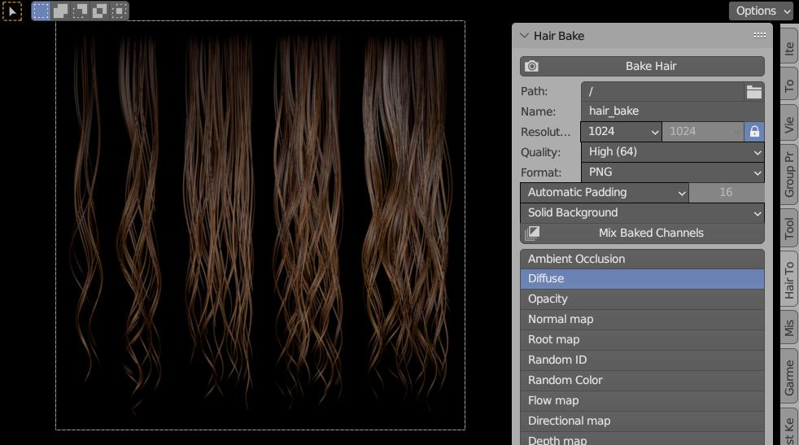
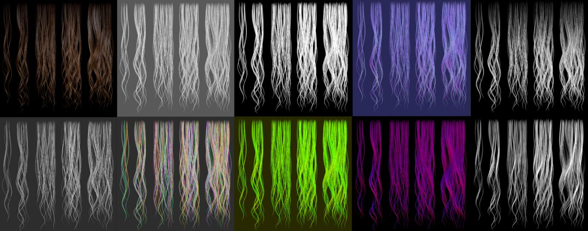
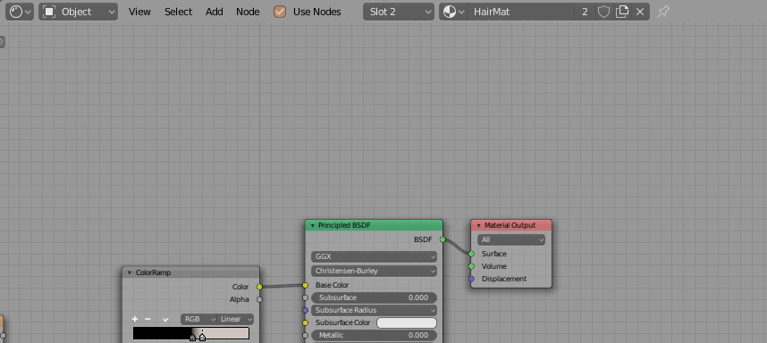
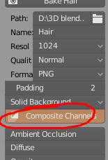
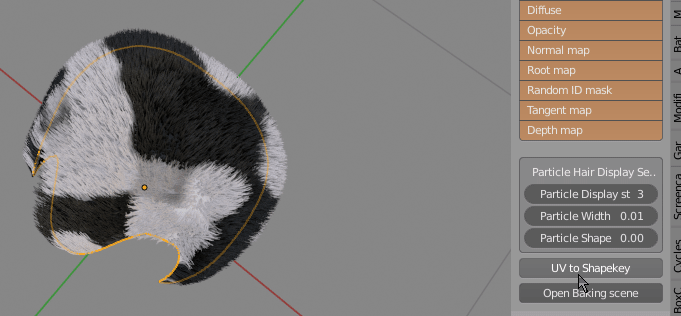

Texture Creation¶
Hair tool comes with build in blend file template, that can be used for baking curves or particle hair to textures. You can bake following passes:
- Diffuse
- AO
- Normal Map
- Opacity Mask
- Root Mask (gradient that goes from black to white along the strands length)
- Random ID mask (give random gray value to each strand)
- Flow Map (perturbs tangent vector - useful for driving anisotropic specular direction)
- Direction Alternative to Flow Map. May give slightly better results
- Depth Mask
 Build-in hair baking scene, that comes with Hair Tool. You can select output path and file name, resolution, bake quality etc.
Baking Textures¶
To bake hair texture:
- Save current blend file.
- Press 'Open Baking scene' button located in right UI Sidebar(N): "Hair Tool" tab -> 'Hair Bake' panel. New scene will be loaded, with example hair setup ready to be baked (you may want to save this template scene as new blend file, to avoid overriding the 'master' template)
- The 'Hair Bake' panel will contain new options. Enable bake passes with Shift+click on multiple the bake passes buttons that you want to bake
- Set output path for baked textures, resolution, bake name etc.
- Press 'Bake Hair' button to bake selected passes
 Example of baked hair passes - diffuse, AO, opacity etc.
You can customize suffix given to each pass output texture name in addon preferences -> Baking Tab.
Texture channel mixing¶
 Custom nodes similar to texture nodes - it will help you pack your bake results into new texture RGBA channels
Note:If you enable button 'Composite channels', Hair Tool will automatically create node setup with input textures from baked images, after baking is finished. 
UV to shape key¶
 Use objects UV to create planar Shape Key. Useful for baking short hair to uv. To un-flatten object run this operator again
Note1: This operator will scale particle hair length, hair roughness amplitude, kink amplitude etc. to maintain consistent hair look after base mesh being flattened! That is why to flatten or un-flatten the mesh use 'UV to shape key' button, or you hair may look wrong, if you manually use shape key slider instead.
Note1: For baking use Hair Tool baking scene.